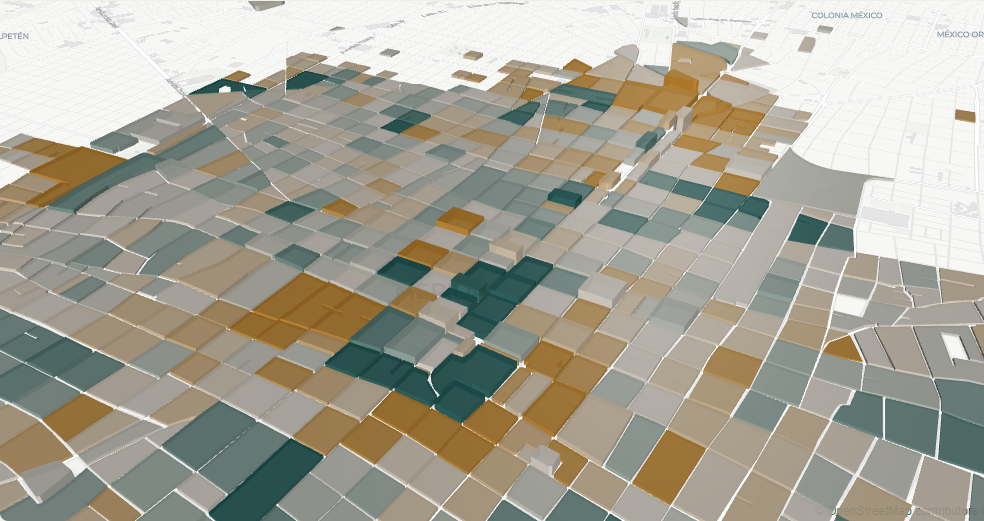

Visual Modeling for Information · UPY Data 9B · Equipo 9
Mérida en venta
Turistificación, comercio y vivienda en la Zona Metropolitana de Mérida entre 2015 y 2026:
una lectura con datos públicos, solicitudes de transparencia y modelos 3D.
Por Julio César De Aquino Castellanos, Brad Robles García y Eliana Lorely Osorio Martínez
Capítulo 01
La llegada: Mérida superó en 30% sus turistas pre-pandemia
Los hoteles de Mérida recibieron 2.26 millones de turistas en 2025, un 30% más que en 2019.
Uno de cada cinco llegó del extranjero (19.6%), una proporción que casi no cambió: el salto
es impulsado por turismo nacional y extranjero por igual.
Turistas de hotel, 20252.26 M19.6% extranjeros · récord histórico
Aeropuerto MID, 20253.94 Mpasajeros, +41% frente a 2019
El Centro se vacía mientras las cafeterías se expanden por el municipio
Entre 2019 y 2025 el municipio de Mérida sumó 2,831 negocios (+5.3%) y las cafeterías crecieron
46.3% en toda la ciudad. Dentro del polígono del Centro Histórico ocurrió lo contrario: se perdieron
1,189 establecimientos (−12.9%), incluidas tiendas de abarrotes (−6.6%) y restaurantes (−7.0%).
Cambio de negocios: Centro vs. municipio
Variación porcentual 2019 → 2025 (INEGI DENUE)
Centro HistóricoTodo el municipio
Solo las cafeterías (+3.3%) crecieron en el Centro; en el conjunto municipal saltaron de 641 a 938 (+46.3%).
Pérdida (−4 o más)Sin cambio (0)Ganancia (+6 o más)Centro Histórico
Fuentes: INEGI DENUE (nov 2019 y may 2025), Marco Geoestadístico (AGEB urbanas) y GeoPortal de Mérida (Zona de Monumentos Históricos).
Escena AR 1 · Diorama colonial de la Manzana 0440-009 (Santa Lucía), 2019 vs. 2025
33 negocios reales en una manzana del Centro Histórico: 15 sobrevivieron (verde), 7 abrieron (ámbar) y 11 cerraron (gris). Los 6 hoteles boutique llevan terraza y alberca.
El hotel invisible: el impuesto al hospedaje creció ×3.2 mientras los hoteles casi no cambiaron
El directorio de negocios apenas registró siete hospedajes más en todo Mérida (de 304 en 2019 a 311 en 2025).
Sin embargo, la recaudación estatal del Impuesto sobre Hospedaje se multiplicó por 3.2 en pesos nominales.
Esa brecha apunta a la vivienda rentada por noche que no aparece en el padrón hotelero tradicional.
Precio mediano vivienda, 3T 2025+39%Yucatán sobre la mediana nacional (4.º de 32 estados)
Salarios bajos, 2T 202649.4%gana hasta 1 salario mínimo (619,805 de 1,255,687)
Vivienda deshabitada o temporal (Censo 2020)21.4%de las viviendas particulares en Yucatán estaban deshabitadas o eran de uso temporal.
Índice 2019 = 100 · Recaudación expresada en pesos nominales
Pesos nominales
Impuesto al hospedaje (AAFY, pesos nominales)Turistas de hotel (DataTur)
Lectura metodológica: las cifras de recaudación de la AAFY están en pesos nominales (sin deflactar por inflación) y el salto posterior a 2021 también refleja la incorporación de plataformas digitales de alojamiento (como Airbnb); la AAFY confirmó que están incluidas en los totales, sin desglose separado.
Modelo de elevación de INEGI (2015) · 831 manzanas del Centro
El horizonte bajo del Centro Histórico en 3D
En el 92% de las 831 manzanas del Centro la altura (percentil 90) se mantiene debajo de 8 metros:
una o dos plantas. Cada bloque se colorea por el cambio neto de negocios entre 2019 y 2025
(verde = pérdida, ocre = ganancia). Escanea el QR para explorar las escenas 3D en Realidad Aumentada.

831 manzanas extruidas por altura p90 (modelo fotogramétrico satelital INEGI 2015, exagerado ×3; no LiDAR aerotransportado). Verde: pérdida de negocios; crema: sin cambio; ocre: ganancia.
Capítulo 04
Quién cuenta la historia: la prensa local triplicó su cobertura sobre vivienda y rentas
En la prensa yucateca (Diario de Yucatán, Por Esto! y La Jornada Maya), la proporción de notas
núcleo sobre rentas, desalojos, especulación e inmobiliarias pasó de 11.2% en 2019 a 31.5% en 2025 (332 notas).
Mientras tanto, en YouTube el 73.4% de los 349 videos sobre mudarse a Mérida están en inglés y acumulan 5.35 millones de vistas.
Prensa local: % de notas núcleo sobre vivienda e inmobiliarias
Muestra dirigida de 1,495 notas en la Zona Metropolitana (2018–2026*)
Cuatro titulares reales en la prensa local
45.2%voz local en GDELT (296 notas)
42.6%voz nacional (279 notas)
12.2%voz internacional (80 notas)
Capítulo 05
No somos Cancún, todavía
En tráfico aéreo, Mérida (+41% vs. 2019) y Oaxaca (+56%) crecieron proporcionalmente más rápido que Cancún (+15%),
aunque con una mezcla muy distinta: en Cancún el 66.3% de los pasajeros son internacionales, frente al 10.2% en Mérida.
Mérida (MID), 2025+41%3.94 M pasajeros · 10.2% internacional
Oaxaca (OAX), 2025+56%1.86 M pasajeros · 14.6% internacional
Cancún (CUN), 2025+15%29.35 M pasajeros · 66.3% internacional
Crecimiento aeroportuario: Mérida vs. Oaxaca vs. Cancún
Pesos nominales: la serie del Impuesto por Prestación de Servicios de Hospedaje (AAFY, folio 1191207426000093) se presenta en pesos nominales, sin ajuste por inflación. La AAFY informó que la recaudación de plataformas digitales (Airbnb y similares) está incluida en los totales sin desglose separado.
Privacidad: en el padrón municipal de licencias de funcionamiento (folio 1190579126000609) se eliminaron los nombres de personas físicas (columna titular) tanto de los archivos limpios como del historial de git.
Elevación 3D: las alturas del Centro provienen del Modelo Digital de Elevación fotogramétrico de INEGI (2015, resolución 5 m), no de LiDAR aerotransportado.
Años parciales (*): DataTur y prensa local para 2026 cubren corte parcial (enero a septiembre / octubre 2026).